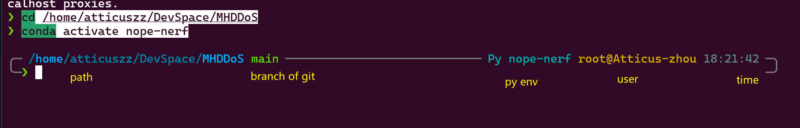

Shell¶
Auto Read Envs¶
make ur bash auto read envs from shells like bash,zsh and Centralize it for easier management
- for origin bash bash is the basic shell in linux
nano /etc/bash.bashrc
# add following
set -a
. /etc/environment
set +a
# note it's run in new session,instead of in /etc/bash.bashrc
source /etc/bash.bashrc
- for zsh zsh is the enhanced and popular shell
Add Envs to /etc/environment¶
Install Zsh¶
see yellow hints  ZSH + Oh My ZSH! on Windows with WSL - DEV Community
{kind=link}
- install zsh
sudo apt install zsh
# install oh my zsh
sh -c "$(curl -fsSL https://raw.githubusercontent.com/ohmyzsh/ohmyzsh/master/tools/install.sh)"
- install front,GitHub - romkatv/powerlevel10k: A Zsh theme,select one of
.ttfdownload and move it into~/.front
- install theme
git clone https://github.com/romkatv/powerlevel10k.git ${ZSH_CUSTOM:-~/.oh-my-zsh/custom}/themes/powerlevel10k
- add theme config
~/.zshrc,then remember to source it
# correct the old ZSH_THEME or can not find p10k command
ZSH_THEME="powerlevel10k/powerlevel10k"
POWERLEVEL9K_RIGHT_PROMPT_ELEMENTS=(history)
POWERLEVEL9K_SHORTEN_DIR_LENGTH=1
export LS_COLORS="rs=0:no=00:mi=00:mh=00:ln=01;36:or=01;31:di=01;34:ow=04;01;34:st=34:tw=04;34:pi=01;33:so=01;33:do=01;33:bd=01;33:cd=01;33:su=01;35:sg=01;35:ca=01;35:ex=01;32:"
- restart terminal and config themes
- install plugins
git clone https://github.com/zsh-users/zsh-autosuggestions.git ${ZSH_CUSTOM:-~/.oh-my-zsh/custom}/plugins/zsh-autosuggestions
git clone https://github.com/zsh-users/zsh-syntax-highlighting.git ${ZSH_CUSTOM:-~/.oh-my-zsh/custom}/plugins/zsh-syntax-highlighting
git clone https://github.com/Pilaton/OhMyZsh-full-autoupdate.git ${ZSH_CUSTOM:-~/.oh-my-zsh/custom}/plugins/ohmyzsh-full-autoupdate
- add plugins config
must add the following before the
source $ZSH/oh-my-zsh.sh
ZSH_HIGHLIGHT_HIGHLIGHTERS=(main brackets pattern cursor root line)
ZSH_HIGHLIGHT_PATTERNS=('rm -rf *' 'fg=white,bold,bg=red')
plugins=(
command-not-found
extract
deno
docker
git
github
gitignore
history-substring-search
node
npm
nvm
yarn
volta
vscode
sudo
web-search
z
zsh-autosuggestions
zsh-syntax-highlighting
ohmyzsh-full-autoupdate
)
- vs code terminal , Add these properties to the user
setttings.json